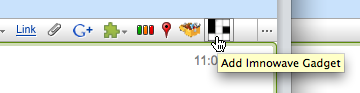
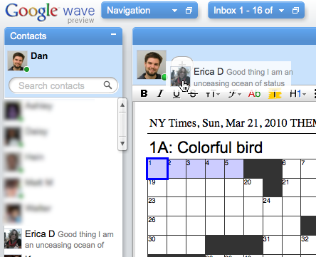
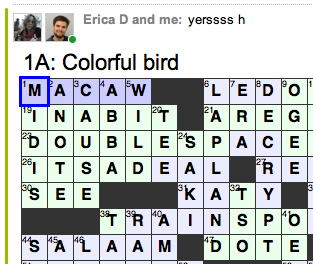
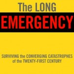

03.27.11
Posted in personal, programming, web at 2:07 pm by danvk
It’s been almost a year since I introduced lmnowave, the collaborative crossword puzzle gadget for Google Wave. A lot has happened in that past year, not least the cancelation of Wave.
First, to clear up some confusion. It’s not “I’m no wave”, it’s “L-M-N-O-Wave”, which is a play on “L-M-N-O-Puz”, aka lmnopuz, the software on which my collaborative crossword system is based. Only a few dozen people ever saw lmnopuz, so no one got the joke. And I realized after releasing it that, by changing ‘puz’ -> ‘wave’, I’d taken away any hint of what my wave gadget actually did. A bad name. Oh well.
In August, Google announced that Wave was canceled. This seemed to be the end of lmnowave. Sure, Wave was still usable. But the life had been sucked out of the project. This was quite disappointing to me, since I’d spent a fair bit of my own time developing the crossword gadget.
Then, in mid-December, Douwe Osinga introduced the oddly-named Google Shared Spaces. It’s an attempt to salvage the Wave gadget code, to let it live outside of Wave.
For lmnopuz, it’s perfect. Here’s the lmnowave shared space. You can use it to collaborate on crosswords with your friends, just like you could with lmnowave. In some ways, it’s even better, since the Wave UI is stripped away and you can focus on your puzzle. To do crosscountry crosswords, my friend and I open up a shared space and call each other on Skype. The combination works really well.
What does the future hold for lmnowave? It’s a bit unclear. I may turn it into a Facebook game, or perhaps use it to learn how to write applications for the Mac App store.
Enjoy!
Permalink
03.09.11
Posted in programming, web at 8:16 am by danvk
At work, I often see web pages that display large numbers like so:
| num-bytes |
1,234,567,890 |
| num-entries |
123,456,789 |
Including the commas in the display makes the numbers easier to read. But it does have a downside. Say you want to calculate the average number of bytes per entry. If you copy/paste the numbers above, the commas will prevent most programming languages (e.g. python or bc) from interpreting them correctly.
My coworker Dan came up with a great solution to this conundrum using CSS. Try copy/pasting these numbers over into the text box:
- 1234 or 2345
- -12345.67
- -123456789
|
|
The commas don’t copy! Best of both worlds!
You can view source to see how it works, but let’s jump straight to the goodies:
Bookmarklet: commacopy
Unobtrusive JavaScript: commacopy.js
To use the bookmarklet, drag it to your browser’s bookmarks toolbar. If you click it, it will silently convert all numbers containing commas on the current page to the fancy copy/pasteable commas. This should really be a Chrome extension that runs on every page, but I’ll leave that as an exercise for the reader.
To use the unobtrusive JS, make a copy of commacopy.js and include it in your page via:
<script src="commacopy.js" language="text/javascript"><script>
commacopy works by converting a number like:
123,456,789
into this HTML:
<style type="text/css">
.pre-comma:before {
content: ",";
}
</style>
123<span class='pre-comma'>456</span><span class='pre-comma'>789</span>
The commas are only present in a CSS style, rather than in the text itself. For reasons which aren’t entirely clear to me, this means that they don’t make it into the clipboard when you copy/paste them.
Permalink
06.28.10
Posted in astronomy, personal, web at 6:45 pm by danvk
If you try searching for [sunrise san francisco] on Google, you’ll see a special display in the results:

This is known as a “onebox”. It’s designed to get you answers quickly. Other examples include the calculator (e.g. [2*2]), weather ([weather 94110]) and time ([time italy]) oneboxes.
The sunrise/sunset onebox is a project that I worked on in my spare time and recently launched. You can read more about it on the Official Google Blog. I first had the idea for this onebox about two years ago, so it’s very gratifying to see it finally launch!
A few features which are worth calling out:
- The sunrise and sunset times are calculated when you perform your query. They are a function of latitude, longitude and the current time. The algorithm is based on the one used by NOAA.
- In most places, you can just search for [sunrise] or [sunset] to get results for your current location. Google figures this out based on your IP.
- This onebox works on mobile phones, too, so you can search for sunset times when you’re out on a hike.
There’s a wrinkle to the sunrise/sunset calculation that non-astronomers don’t typically think about. The sun starts to behave strangely once you get north of the arctic circle or south of the antarctic circle. If you’re north of the arctic circle, then there will be at least one day during the summer when the site never sets. And there will be at least one day during the winter when it never rises. This is truly a special case for the onebox! Here’s what it looks like:

I feel bad for those Barrowans — hopefully they’ll be able to fall asleep sometime in the next 34 days!
Permalink
03.22.10
Posted in programming at 12:02 am by danvk
Last Winter, a dear friend of mine moved from San Francisco to Brooklyn. With an entire continent between us, my principal crossword puzzle buddy and I looked in vain to the internet for help. Was there truly no good way to do a crossword together online?
The New York Times offered an applet, but it proved to be finicky and would only let us do the most recent day’s puzzle. A friend’s project offered hope, but only led to “Service Temporarily Unavailable”.
Enter: lmnowave!
lmnowave is a crossword puzzle gadget for Google Wave. To do a crossword puzzle with a friend, you’ll both need Google Wave Accounts.
Once you’ve got that taken care of, click this big link to get going:
You should see something like this:

Click the “Install Icon” and create a new wave. You’ll see a crossword puzzle icon in your toolbar:

Click it to add a crossword gadget. It should look like this:

If you’re using Chrome or Safari, you may get a warning about not being able to upload puzzle files. This is fine — just switch to Firefox for a minute or try one of the built-in Onion puzzles.
If you have a .puz file on your computer (perhaps from your times subscription), drag it onto the big lmnowave icon:

The puzzle will load instantly. Now drag a friend into the wave:

and you’re ready to compete or collaborate as you see fit! Each player gets his or her own color, so you can keep track of who’s filled in each square:

lmnowave is an open-source project written entirely in JavaScript. If you’d like to contribute, check it out on github. Run into a bug or have a feature request? Let me know here.
Permalink
12.30.09
Posted in books, personal at 10:00 am by danvk
As part of my 2009 year-in-review, I tried to make a list of all the books I’d read. Give it a shot for yourself, this is hard to do! I can remember what I’ve read in the last few months, but my memory starts to fade as I get towards summer. I found a few books from the start of the year via Amazon receipts and library records, but I’m sure there are many I missed.
Here’s the list, with a few thoughts about each.
 Oracle Bones, Peter Hessler
Oracle Bones, Peter Hessler
A follow-up to River Town, this book chronicles Hessler’s time in China as a journalist. Both books offer a great impression of life in China, though this one started to drag on a bit towards the end. Highlights: his discussion of the alphabetization of Chinese and his interactions with Polat, the Uighur trader who wants to emigrate to America.
 Better: A Surgeon’s Notes on Performance, Atul Gawande
Better: A Surgeon’s Notes on Performance, Atul Gawande
This book fits neatly in the “find six interesting stories and give them a catchy one-word title” genre pioneered by books like Freakonomics. But the stories here are very interesting! And the thesis is, too. In medicine (and presumably elsewhere), there are huge gains to made through non-technological means. Apgar scores reduced child mortality by making it easier to test the efficacy of treatments and changing perceptions about which babies could live. Changed expectations and the sharing of case histories had dramatic effects on the life expectancy of Cystic Fibrosis patients.
Guns, Germs, Steel, Jered Diamond
My thoughts on why this is a really bad book are documented in another blog post.
The Botany of Desire, Michael Pollan
As always, Michael Pollan treads that fine line between greatness and wishy-washiness. The Omnivore’s Dilemma was great. In Defense of Food was not. This book is somewhere in between. At least Michael Pollan is always honest, a welcome change after reading Jered Diamond. His researches into Johnny Appleseed were particularly fun to read. I’d never thought about this historical figure.
 The Book Nobody Read, Owen Gingerich
The Book Nobody Read, Owen Gingerich
After reading Koestler describe Copernicus’s De Revolutionibus as “the book that nobody read”, Gingerich sets out to find every extant copy and document the marginalia — evidence of who read the book and what they thought. Part of what makes this book fun is just what a quintessential academic Gingerich is. The one thing lacking is any discussion of where Copernicus got his ideas from. This book also implicitly makes a strong argument for digitizing books: think how easy his quest would have been if he’d had search!
The watershed; a biography of Johannes Kepler, Arthur Koestler
A 250-page excerpt from the book with which Gingerich took issue. I’d always though of Kepler as the first astronomer who really “got it”. His three laws cleared away millenia of intellectual baggage. If nothing else, this book rid me of that delusion. Kepler is a really frustrating figure. He is spectacularly modern in some senses, but frustratingly medieval in others. He certainly did not consider the three laws for which we remember him his most significant contribution to science. Koestler clearly has an agenda, but I didn’t find it too distracting.
Scourge: The Once and Future Threat of Smallpox, Jonathon Tucker
A really fun read. The eradication of smallpox was one of the most significant technological feats of the 20th century, and yet I’d never heard/read anything about it before. There are many great stories in the final steps towards eradication. I learned a lot about disease and pathogens from this book.
 Paris from the Ground Up, James H. S. McGregor
Paris from the Ground Up, James H. S. McGregor
I read this on the way to Paris. It gave me a great sense of the city: where things were, what the significant sights were, why they were significant, etc. It follows a bizarre chronological cross thematic progression as you read which I found confusing at first, but ultimately enjoyed. If you’re going to Paris and want to have to have some context for what you’ll be seeing, this is a great book to read!
The Crowded Universe: The Search for Living Planets, Alan Boss
This book chronicles the hunt for extra-solar planets between 1998 and 2008, a time during which this area exploded. It reads like a blog, with dated entries any time something interesting occurred. I wrote the author and suggested he start a blog, but he didn’t want to lose the potential revenue from another book ten years from now. NASA does not come across well in this book. The trials and tribulations of what became the Kepler Mission span the whole time frame.
The Intelligent Asset Allocator, William Bernstein
This is really close to the ideal personal finance book that I’d like to read. Whereas A Random Walk Down Wall Street explains why you should index, this book talks about how you should allocate assets between bonds, stocks, real estate, etc. It’s not particularly prescriptive — it won’t say “you should be 75% stocks and 25% bonds” — but at least it gives a good background on the issues involved. Basic upshot: some diversification is always a good idea.
The Long Emergency, James Kunstler
This book is bad, bad, bad. Kunstler’s argument is that our society is so deeply dependent on oil that, once we run out, the effects will be completely catastrophic. Large swaths of the United States will become uninhabitable. Much of modern agriculture is dependent on fossil fuel-based fertilizers, so billions of people will starve to death as earth’s carrying capacity plummets. Kunstler loves laying out doom and gloom scenarios. The problem is that he can’t be bothered to explain why they’re inevitable. There are zero charts or tables in this book, and his dismissal of technological solutions as cornucopianism is infuriating. See my thoughts on Guns, Germs, Steel for what it’s like to read a non-fiction book where you feel actively mislead.
Permalink
« Previous Page — « Previous entries
Next entries » — Next Page »